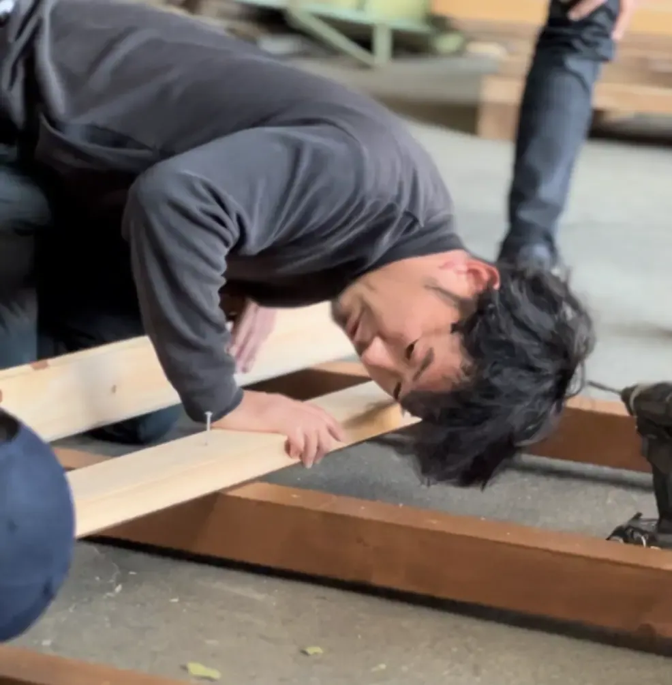
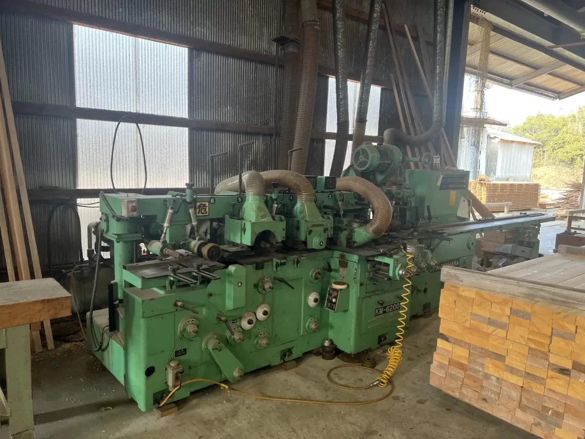
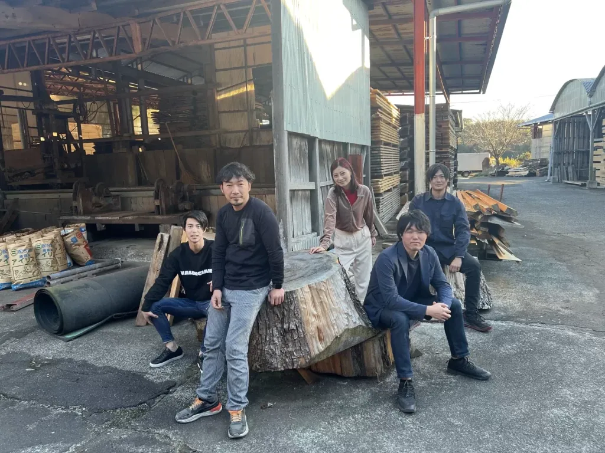

Rink株式会社（本社:宮崎県）は、国産ヒノキ木材を使用したバレルサウナの製造・販売を行っています。
ink SAUNAは、１次産業の「林業」と、２次産業である「木材の加工業」と、３次産業である「販売」の３社が結集し、６次産業化を推進する製造メーカーとして「五感を楽しむバレルサウナ」をテーマに、感動的なサウナ体験を提供いたします。
この度、バレルサウナの製造責任者・後藤耕作さんに製造の裏方や商品にかける想いについて話を聞きました。
Rink SAUNAの誕生ともに、木材製材業からバレルサウナへの挑戦をスタート
後藤さんは、大学卒業後に国際物流会社で輸出入業務に従事。
28歳で宮崎県に戻り、先代から継がれた木材製材・加工業を引き継ぎ、国内外の木材を幅広く加工しています。
木材のプロとしてのスキルを身につけ、一枚板を使ったカウンターやテーブル加工も行います。
偶然のご縁で、代表：永友から地元都農町でのバレルサウナプロジェクトに誘われ、小さな町でサウナ事業を通じて地域に貢献する想いに大変共感しました。
後藤自身にとっても今までの知識や経験を活かして、バレルサウナ職人としての新たな挑戦が始まりました。
五感を楽しむ、人の想いが宿るバレルサウナにしたい

単にバレルサウナを制作するのも可能ですが、「ワクワクや感動を」表現し、健康効果以外で魅力をしっかりお届けできるバレルサウナを作りたいと思いました。
その思いを実現可能なのは「国産ヒノキ」で作るしかないと直感的に選びました。
ヒノキは古くから社寺仏閣で使用され、耐久性が高く、殺菌・抗菌効果や防虫効果がある。香りが良く、リラックス効果も期待できる素晴らしい木材です。
実際、国産のヒノキで作られたRink SAUNAは、扉を開けた瞬間に桧の香りが広がり、その感動とリラックス感に包まれます。
また、可愛らしさとスタイリッシュさを兼ね備えた見た目だけでなく、安心して長く使って頂ける工夫や改善にも取り組んでいます。
「妥協しない」試行錯誤で細部までの製作過程

木材は新芽が息づき、成長し、伐採され、加工されるまでの数十年の月日がかかります。
私たちは、「木製品には人の想いが宿る」と信じ、皆様の人生が少しでも豊かになるような製品を提供したいと考えています。
そのため、ヒノキ材の調達からモルダー加工機での高度な加工、扉や壁、ベンチ部分、スノコ、土台部分などの手作業による細かい加工まで、バレルサウナができるまでの一連の工程に心を込めます。
高温多湿な環境下で、木材の膨張・収縮、割れなどの細かな技術が求められます。
サイズ展開の設計から製材供給、乾燥、加工工程に至るまで、安定性と品質を追求しました。
２度塗り防腐・防虫塗装や３重構造の屋根張り、扉などの建具改良、側面アール板の彫りなど、見えない部分への工夫が施されています。
部材パーツ数や手順が多いため、根気よく、安定した製品を提供するために現場チームとシミュレーションを重ね、何度もミーティングを行い、より良い開発に取り組みました。
Rink SAUNAの魅力をさらに引き出すために、できることはまだ沢山

現在、チームの努力もあり、Rink SAUNAの導入先も数多くなっています。
国内・自社製造販売で、高品質かつお求めやすい価格を実現し、お客様からも評価されていることに大変嬉しく思っています。
私たちは木材に対する豊富な知識と経験を生かし、バレルサウナを通してRink SAUNAの魅力をもっと引き立て、皆様の人生が少しでも豊かになれば幸いです。
これまで培った木材加工のノウハウを生かし、品質を更に向上させる余地が十分にあると考えています。
ゴールがない中でも、仲間と共に挑戦を続けていき、今後も「ワクワクと感動を」お届けしていきます。
バレルサウナは「Rink SAUNA」
Rink SAUNAでは、木材の伐採（１次産業）、加工製造（２次産業）、販売・アフターサポート（３次産業）まで、国内工場にて一気通貫で行うことを実現しました。
６次産業化により、自社ブランド製品の高品質なバレルサウナを、「メーカー直送」でお客様へ届けます。
多くの中間コストを削減させたことで、部品保証などの「導入後の安心」もさらに充実化させました。
五感を楽しむ国産バレルサウナをぜひお楽しみください。